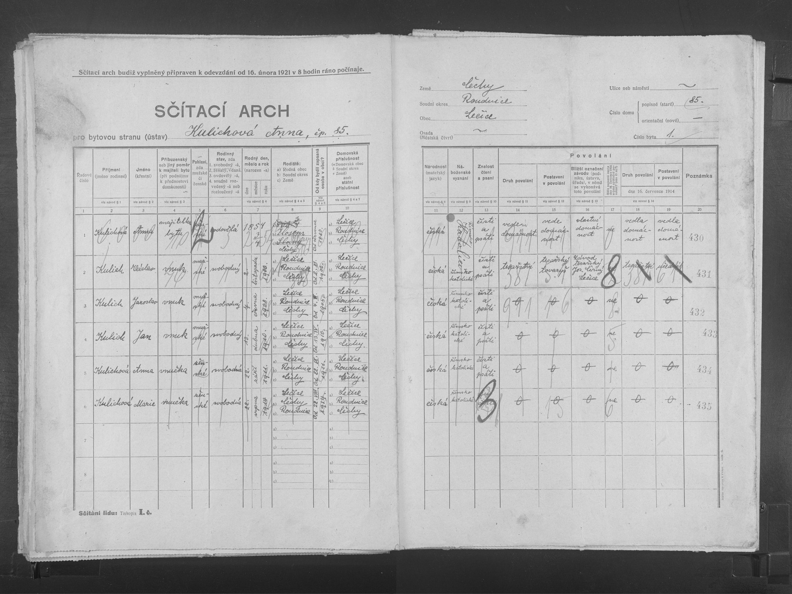

Text z matriky a překlad
Přepis originálu
Ledčice čp. 85, byt 1, soudní okres Roudnice, Čechy; sčítání 1921. Bytová strana: Kulichová Anna. 1. Anna Kulichová, majitelka bytu, ovdovělá, nar. 1854; den/měsíc zapsán zlomkem 3/4, význam zatím neověřen. Rodiště Zlosyň („Zlosejn“), soudní okres Slaný. V obci od července 1880. Vede vlastní domácnost. 2. Václav Kulich, vnuk, svobodný, nar. 2. listopadu 1900 v Ledčicích; v obci od narození. Tesařský tovaryš, tesařský závod Jos. Černý (?) v Ledčicích; příjmení zaměstnavatele nejisté. Ve sloupci povolání k 16. červenci 1914 je tesařství, učedník. 3. Jaroslav Kulich, vnuk, svobodný, nar. 4. června 1908 v Ledčicích. 4. Jan Kulich, vnuk, svobodný, nar. 13. dubna 1910 v Ledčicích. 5. Anna Kulichová, vnučka, svobodná, nar. 22. září 1911 v Ledčicích. 6. Marie Kulichová, vnučka, svobodná, nar. 22. srpna 1914 v Ledčicích. Všichni mají českou národnost, římskokatolické vyznání a domovskou příslušnost Ledčice. Anna starší a první čtyři vnoučata čtou a píší; u Marie je údaj o čtení překrytý, nevyvozujeme gramotnost. Vztah vnuk/vnučka se týká Anny jako hlavy domácnosti. Arch nejmenuje rodiče vnoučat: nedokládá, že všech pět jsou sourozenci, ani zda je Anna babička Václava z otcovy či matčiny strany. Nepřítomnost rodičů sama nedokládá jejich úmrtí před rokem 1921. Shoda přesného narození, jména, řemesla a domu propojuje Václava s jeho oddacím zápisem 1925.
Překlad
Ledčice čp. 85, byt 1, soudní okres Roudnice, Čechy; sčítání 1921. Bytová strana: Kulichová Anna. 1. Anna Kulichová, majitelka bytu, ovdovělá, nar. 1854; den/měsíc zapsán zlomkem 3/4, význam zatím neověřen. Rodiště Zlosyň („Zlosejn“), soudní okres Slaný. V obci od července 1880. Vede vlastní domácnost. 2. Václav Kulich, vnuk, svobodný, nar. 2. listopadu 1900 v Ledčicích; v obci od narození. Tesařský tovaryš, tesařský závod Jos. Černý (?) v Ledčicích; příjmení zaměstnavatele nejisté. Ve sloupci povolání k 16. červenci 1914 je tesařství, učedník. 3. Jaroslav Kulich, vnuk, svobodný, nar. 4. června 1908 v Ledčicích. 4. Jan Kulich, vnuk, svobodný, nar. 13. dubna 1910 v Ledčicích. 5. Anna Kulichová, vnučka, svobodná, nar. 22. září 1911 v Ledčicích. 6. Marie Kulichová, vnučka, svobodná, nar. 22. srpna 1914 v Ledčicích. Všichni mají českou národnost, římskokatolické vyznání a domovskou příslušnost Ledčice. Anna starší a první čtyři vnoučata čtou a píší; u Marie je údaj o čtení překrytý, nevyvozujeme gramotnost. Vztah vnuk/vnučka se týká Anny jako hlavy domácnosti. Arch nejmenuje rodiče vnoučat: nedokládá, že všech pět jsou sourozenci, ani zda je Anna babička Václava z otcovy či matčiny strany. Nepřítomnost rodičů sama nedokládá jejich úmrtí před rokem 1921. Shoda přesného narození, jména, řemesla a domu propojuje Václava s jeho oddacím zápisem 1925.